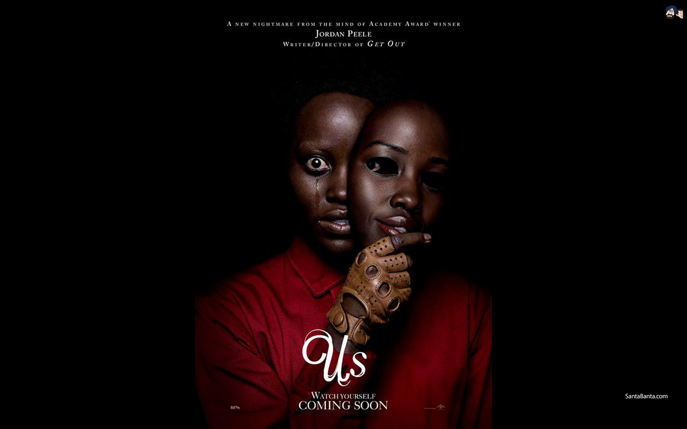

Biz - Us

Jordan Peele’ın filmi Biz, henüz yaygın gösterime girmeden inanılmaz övgülerle, abartılı yakıştırmalarla karşılandı. Peele’ın Hitchcock’u tahtından indireceği, yeni bir korku ustasının doğduğu gibi büyük iddialar havada uçuştu. Filmin ya da Peele’ın şüphesiz bu şuursuzca övgülere bir dahli yok. Ancak “Yeni Hitchcock” iddialarının kaynağı malum. Peele, CBS All Access için Alfred Hitchcock’la anılan ünlü televizyon efsanesi Alacakaranlık Kuşağı’nı yeniden hayata geçiriyor. Buna paralel olarak Biz’in hikâyesi de 1960 yılında yine Alacakaranlık Kuşağı’nda yayınlanan Mirror Image adlı bir bölümden esinlenmiş. Bu bölümde ana karakter, kendisine tıpatıp benzeyen bir yabancının hayatını cehenneme çevirmeye çalıştığına inanıyordu. Biz’de de Lupita Nyong’o tarafından canlandırılan ana karakterimiz Adelaide’in hayatını cehenneme çeviren olaylar, ailesiyle tatile gittiği sırada kendisinin tıpatıp aynısı Red’le karşı karşıya geldiğinde vuku buluyor.
Bu Adelaide ve Red’in ilk karşılaşması değil. Filmin başında, 1986 yılındaki çocuk Adelaide’le tanışıyor ve onun bir gece lunaparktaki “kendini bul” temalı bir korku tünelinde kaybolduğunu, burada tıpatıp ikiziyle karşılaşıp travma geçirdiğini izliyoruz. Bu ilk karşılaşmanın ardından Adelaide’in hayatı travma sonrası stres bozukluğuyla baş ederek geçiyor. Lakin sonrasında eşi ve iki çocuğuyla mutlu bir aile tablosunda çıkıyor karşımıza. Gittikleri sayfiye kasabasıysa Adelaide’in geçmişindeki travmanın gerçekleştiği kasaba ve buraya gelir gelmez Adelaide türlü işaretler, garip tesadüflerle başına bir iş geleceğini hissediyor adeta. Nihayetinde içindeki kaygının kehaneti gerçekleşiyor ve sadece kendisinin tıpatıp aynısını değil, tüm aile bireylerinin de tıpatıp aynısını evinin kapısında buluyor. Bizzat aynıları tarafından esir alınan Adelaide ve ailesi için o andan itibaren bir ölüm kalım savaşı başlıyor.
Filmin bilhassa Adelaide ve ailesi diğerleri tarafından esir alınana dek müthiş bir rejiyle ilerlediğini, Peele’nin ne yaptığını çok iyi bildiğine hem sizleri hem de kendisini mükemmelen ikna ettiğini söylemek mümkün. Ailenin esir alındığı noktadan itibaren hepsinin birbirlerini öldürmeye yönelik arzuları da bir yere kadar iyi işliyor. Peele’ın rejideki hakimiyeti, jilet gibi kurgusu ve Michael Abels’ın her türlü övgüyü hak eden muazzam müziği filmin ilk 40-45 dakikasını koltukta şöyle bir doğrulmanıza sebebiyet verecek kadar yükseltiyor. Lupita Nyong’o, aşırılığın sınırlarında dolanan Red performansıyla ve role dair buluşlarıyla büyülüyor desek yeri. Lakin filmin geri kalanı için aynı şeyleri söylemek güç. Zira film Red ve Adelaide’i karşı karşıya getirdikten sonra Red’in güçlü tiradları haricinde bu karakterlerin hikâyede ne yapacağına, onlar üzerinden ne söyleyeceğine dair hiçbir fikri yokmuş gibi davranıp bocalıyor. Öyle ki Red, esir aldığı Adelaide’in “Şimdi ne olacak” sorusuna, “Şimdi bekleyeceğiz” gibi bir yanıt verebiliyor ancak. Bekleyecek miyiz? İyi de neyi? Peşi sıra öyle sert virajlara dümen kırıp, öylesine yükler alıyor ki sırtına, bunlardan kurtulması da, layıkıyla finale kadar bu yükleri taşıması da imkânsız oluyor.
Filmin devamında anlıyoruz ki bu yaşananlar sadece Adelaide ve ailesinin başına gelmiyor. Bencil, umursamaz, cahil modern zaman Amerikalıları olarak resmedilen komşuları Tyler Ailesi’nin evine gittiklerinde, onların da tıpatıp aynıları tarafından katledildiğini görüyorlar ki bu noktada istilacıların “hesaplaşma” peşinde koşmadan yeryüzündeki aynılarını sorgusuz sualsiz öldürmeye programlı hareket ettiğini görüyor, “Adelaide ve ailesinin farkı neydi o vakit?” diyoruz. Filmde ayrıca, insanların tıpatıp benzerleri tarafından istilası ve katledilmesinin tüm Amerika’ya yayıldığını görüyoruz televizyon yayınları vesilesiyle ve Adelaide’in öznel hikâyesi olarak başlayan film, bir anda bir kıyamet senaryosuna, neredeyse bir zombi istilası filmine dönüşüyor. Peele bu noktalarda baştan itibaren taşıdığı mizah duygusunu da yer yer terk edip ciddileşiyor. Filmdeki söz konusu istilanın amacıysa tüm insanların ürkütücü benzerleriyle yer değiştirmesi ve 1986 yılının Mayıs ayında, müzik yapımcısı Ken Kragen’ın ön ayak olmasıyla Afrika’da açlığa dikkat çekmek için gerçekleşen Amerika El Ele adlı kampanyanın bir reprodüksiyonunu gerçekleştirmek.

Bu büyük, ülke çapındaki kitlesel istila öyküsünün altını doldurabildiği şüpheli Peele’ın. Hatta film bir noktadan sonra düpedüz olay olay, etap etap ilerleyen bir oyuna dönüşüyor ve ne Adelaide’in ailesinin hayatta kalmak için aldığı eylemleri, ne de tıpatıp aynılarının yaptıklarını umursamaz hâle geliyorsunuz. Zira olanların sebebini anlayamadığınız bir kaos hâkim oluyor filme. Bir noktadan sonra hikâyenin başında anlattığı duruma dair nefis görsel çözümler bulan Peele yerine, izleyiciye olup biteni monologlarla anlatan başka bir Peele gelip oturuyor yönetmen koltuğuna adeta. Filmdeki istila hâlinin mikro düzlemdeki karşılığı gibi başlayan Adelaide-Red hesaplaşması yahut kişinin kendisiyle sınanmasına dair temas edilebilecek onca şey es geçiliyor Biz’de. Peele’ın filmi “Siz kimsiniz?” sorusuna “Biz Amerikalıyız.” diye cevap veren tıpatıplar gibi aleni vurgular da yapıyor temas etmek istediği ancak yarıda bıraktığı onlarca temadan birine (Filmin orijinal ismi Us, aynı zamanda United States’e karşılık geliyor malum). En nihayetinde film, yeniden Adelaide’in hikâyesini anımsayıp burada bir twist yapmak suretiyle sona eriyor ki, filmin büyük bölümünde çeşitli gerilim ve şiddet sahnelerine kurban verilen “Red ve Adelaide’nin tam anlamıyla gerçekleşmeyen hesaplaşması”nın yüzlerce flashback’le örülü böylesi bir twist’le bitmesi de bir etki yaratmıyor ne yazık ki.
Peele’ın filmi birçok farklı kavrama, temaya temas ediyor. Farklı alt türlerle ilişkilenip, süratle o virajdan bu viraja doğru savruluyor. Ancak yukarıda bahsettiğimiz Alacakaranlık bölümü Mirror Image’a esin kaynağı olan Subjective Double sendromu (kişinin tıpatıp benzerini etrafında görmeye başlaması ve yaptığı hataları, başına gelen kötülükleri ona bağlaması) başta olmak üzere psikiyatrik rahatsızlıklar da çıkış noktasını oluşturuyor. Capgras Sendromu da bunlardan biri. 1923 yılında Fransız psikiyatrist Joseph Capgras’ın tanıladığı bu sendrom, hastanın bir ya da birden fazla yakınını aslında bir başkası olmakla suçladığı sarsılmaz bir inançla çıkıyor ortaya. Bu sendromdan mustarip kişiler sevdiklerinin, yine tıpkı onlar gibi görünen başka varlıklarla yer değiştirdiklerine inanıyor. Kimi zaman uzaylılar oluyor sevdiklerinin bedenini ele geçiren, kimi zaman doğaüstü yaratıklar ya da kişinin inancına göre iblisler, cinler, periler… Bu paranoya ve anksiyeteyle örülü sendromla tematik olarak yakınsayan filmler de mevcut. Jack Finney’nin aynı adlı eserinden sinemaya defalarca uyarlanan Invasion of the Body Snatchers bunun en önemli örneklerinden biri ve Biz’in de yine dirsek temasında olduğu bir film. John Carpenter’ın Yaşıyorlar – They Live’ini de listeye ekleyebiliriz. Bu filmlerde paranoyanın ve korkunun kaynağı, insanların artık o bildiğimiz insanlar olmaması, görüntüleri aynı olmasına rağmen, başka yaşam formları tarafından ele geçirilmiş olmalarıydı ki Invasion of the Body Snatchers’ın Soğuk Savaş yıllarının paranoya duygusundan yola çıktığını iddia edebiliriz. Peele’ın da bu konuya dair modern bir iddiası var Biz’de. Soğuk Savaş yıllarından birinin komünist, vatan haini, ajan yahut toplumu ele geçirmeye meyyal bir terörist olduğuna dair bilhassa ABD’nin yaydığı paranoya, bir nevi “başkalaşmaya” duyulan paranoyaydı. Biz’deyse Peele’ın işaret ettiği çok daha ilginç bir paranoya, “dışarıdakiyle”, “öteki”yle, kendinden daha aşağı olanla görünürde de olsa “aynılaşma” paranoyası. Şöyle ki…
Biz, bir notla başlıyor ve Amerika’da ne amaçla kazıldığı ya da ucunun nereye gittiği bilinmeyen birçok yeraltı tüneli olduğu bilgisini veriyor izleyicisine. Bu tünellerden neyin gelebileceğine dair bir meraka ve korkuya kapıldığımız hikâyede, yukarıda da bahsettiğimiz istilacılar geliyor. Yukarıdakilerle tıpatıp aynı görünen bu insanları evsizler, yurtsuzlar, genel olarak medeniyetin ötekileştirdiği kişiler gibi görmek mümkün. Günümüzde “medeni dünya” insanlarının en büyük paranoyası malum; Yabancı, ne olduğu belirsiz, dinlerini, dillerini anlamadıkları, huyunu suyunu bilmedikleri göçmenlerin gelip yerlerine geçmeleri ve kendileriyle aynı haklara, aynı ayrıcalıklara sahip olmaları. Yani ötekileştirdiğiyle eşitlenmeleri, aynılaşmaları. Bu noktada Biz, bilerek ya da bilmeyerek böylesi bir paranoyanın altını çiziyor denilebilir; ki bu durumda ötekilere biçtiği, “hastalıklı olarak gördükleri yeryüzündeki benliklerini” yok edici rol de garip bir hüviyete bürünüyor. Yine de bu vaziyet sadece hissedilen ve layıkıyla işlenmeyen bir çıkarım olarak kalıyor filmde. Çünkü Peele, bulduğu bu konseptin üzerine, o konseptin kaldıramayacağı kadar hikâye, finale kadar taşıyamayacağı kadar tema bindiriyor, bu da her şey olayım derken olsa olsa yer yer eğlenceli bir kafa karışıklığına dönüşmesine sebep oluyor Biz’in.
 Interstellar
Interstellar Oblivion
Oblivion The Martian
The Martian Arrival
Arrival Mad Max
Mad Max Upgrade
Upgrade John Wick
John Wick Deadpool
Deadpool SAW
SAW The Conjuring
The Conjuring Get Out
Get Out Zootopia
Zootopia The Incredibles
The Incredibles Inside Out
Inside Out Spider-Man
Spider-Man.svg)